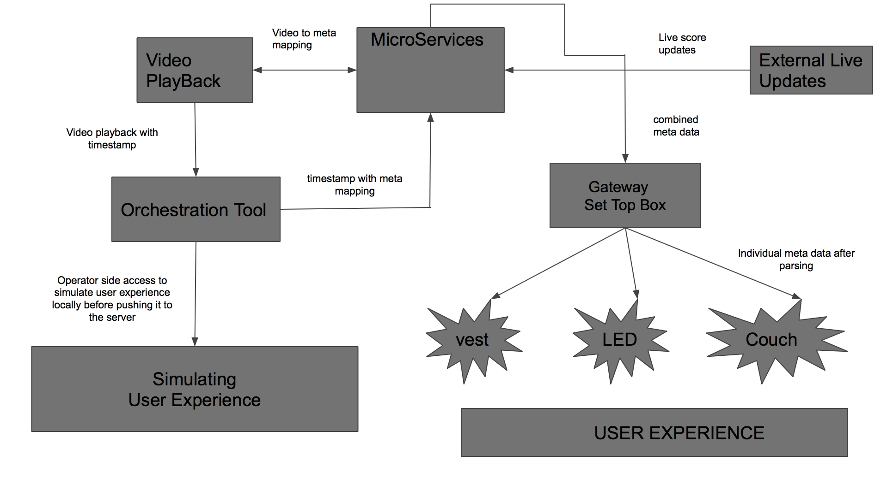

# ESE519
Project
Title : Backend services for the Orchestra tool used for In-house entertainment system
Team Members
Anand Sriramulu - anandsri@seas.upenn.edu Tejesvi Chadag - tejesvi@seas.upenn.edu
Goal
The goal of this project is to build this robust backend service which would synchronize all these micro services with a video stream and produce corresponding effects according to their availability at the client end. Add support for Sporting effects , wherein we can create unique effects at the user end according to the current scores or when events occur during the game such as goal scored,etc.
System Architecture
